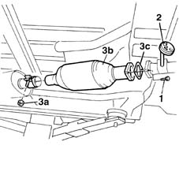
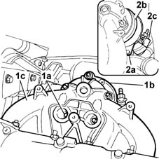
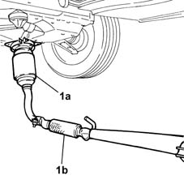
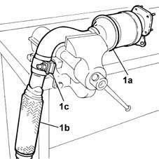
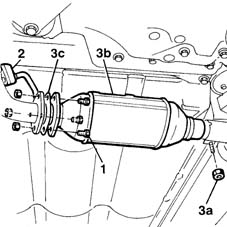

1080B62 catalytic converter - r + r
- Path
- Procedures > 10 ENGINE UNIT > 1080 EXHAUST EMISSION CONTROL SYSTEM > 1080B exhaust emission control system > 1080B62 catalytic converter - r + r
- Kind
- repair procedure (removal / refitting; the operation number is the code)
- Applies to
- all engines; all production periods
- Interactive page
- https://sloeber94.github.io/elrnDB-fMltpl/en/#/2891298
Applies to: engines: 1.6 16v; all production periods
 Removing
Removing
 Refitting
RefittingPlace the car on a ramp.
1. Undo the bolts fixing the exhaust pipe to the catalytic converter.
2. Release the rubber block from its stud on the body.
3. Undo retaining nut (3a) and remove catalytic converter (3b) from the exhaust pipe. Recover attachment gasket (3c).

Applies to: engines: 1.6 16v; all production periods
Refitting
RemovingCheck that the catalytic converter is undamaged.
Fit the catalytic converter to the rear silencer unit and the front exhaust pipe section. Change the gasket.
Tighten the nut securing the catalytic converter to the rear exhaust pipe section.
 | Fastening | Component | Ø | Value (daNm) |
|---|---|---|---|---|
- | Nut | CATALYTIC CONVERTER (ONE) | - | 5.5 |
Tighten the bolts securing the exhaust pipe to the catalytic converter.
| Fastening | Component | Ø | Value (daNm) |
|---|---|---|---|---|
- | Bolt | EXHAUST PIPE TO ENGINE | M8 | 2.4 |
Position the rubber block on its support stud.
Remove the vehicle from the ramp.
Applies to: engines: 1.6 16v; all production periods; only with equipment: Euro 3
Removing
Refitting1080B94 front lambda probe with catalitic converter r r
1080B95 rear lambda probe with catalitic converter r r
1072C44 exhaust manifold heat shield on bulkhead - r+r
1076B20 rear exhaust silencer - r + r
Lower the lift.
1. Undo the nuts (1a) fixing the converter (1b) to the exhauast manifold (1c).
2. Undo the bolts (2a) fixing the converter (2b) retaining band to the exhaust manifold, then loosen the band acting on the nut (2c). and release the catalytic covnerter from the exhaust manifold

Applies to: engines: 1.6 16v; all production periods; only with equipment: Euro 3
Raise the lift.
1. Remove the catalytic converter (1a), including the intermediate pipe section (1b), sliding it downwards.

Applies to: engines: 1.6 16v; all production periods; only with equipment: Euro 3
1. Position the complete assembly in a vice and separate the catalytic converter (1a) from the intermediate section (1b) of the exhaust pipe, loosening the band (1c).

Applies to: engines: 1.6 16v; all production periods; only with equipment: Euro 3
Refitting
RemovingLower the lift.
Position the catalytic covnerter and screw in the fixing nuts between the manifold and the converter without tightening them.
Restrict the converter retaining band and tighten the fixing bolts.
Tighten the nuts fixing the converter to the exhaust manifold.
Raise the lift.
Refit the intermediate section of the exhaust pipe to the catalytic converter.
1076B20 rear exhaust silencer - r + r
1072C44 exhaust manifold heat shield on bulkhead - r+r
1080B95 rear lambda probe with catalitic converter r r
1080B94 front lambda probe with catalitic converter r r
Lower the lift.
Applies to: engines: 1.9 JTD 8V; all production periods
Removing
RefittingPlace the car on a ramp.
1. Undo the bolts securing the catalytic converter to the front exhaust pipe.
2. Remove the rubber block from its retaining stud.
3. Unscrew bolt (3a) securing the catalytic converter to the rear silencers, remove catalytic converter (3b) and recover gasket (3c).
Applies to: engines: 1.9 JTD 8V; all production periods
Refitting
RemovingFit the catalytic converter into its seat on the rear silencers.
Fit the stud to the rubber block.
Tighten the rear catalytic converter retaining bolt.
| Fastening | Component | Ø | Value (daNm) |
|---|---|---|---|---|
- | Nut | CATALYTIC CONVERTER (ONE) | - | 5.5 |
Tighten the bolts securing the catalytic converter to the front exhaust pipe section.
| Fastening | Component | Ø | Value (daNm) |
|---|---|---|---|---|
- | Bolt | EXHAUST PIPE TO ENGINE | M8 | 2.4 |
Remove the vehicle from the ramp.
Applies to: engines: 1.6 16v; all production periods; only with equipment: BIPOWER and BLUPOWER
Removing
RefittingPlace the car on a ramp.
1. Undo the bolts fixing the exhaust pipe to the catalytic converter.
2. Release the rubber block from its stud on the body.
3. Undo retaining nut (3a) and remove catalytic converter (3b) from the exhaust pipe. Recover attachment gasket (3c).

Applies to: engines: 1.6 16v; all production periods; only with equipment: BIPOWER and BLUPOWER
Refitting
RemovingCheck that the catalytic converter is undamaged.
Fit the catalytic converter to the rear silencer unit and the front exhaust pipe section. Change the gasket.
Tighten the nut securing the catalytic converter to the rear exhaust pipe section.
| Fastening | Component | Ø | Value (daNm) |
|---|---|---|---|---|
- | Nut | CATALYTIC CONVERTER (ONE) | - | 5.5 |
Tighten the bolts securing the exhaust pipe to the catalytic converter.
| Fastening | Component | Ø | Value (daNm) |
|---|---|---|---|---|
- | Bolt | EXHAUST PIPE TO ENGINE | M8 | 2.4 |
Position the rubber block on its support stud.
Remove the vehicle from the ramp.
Topics linked from this page (4)
- 1072C44 exhaust manifold heat shield on bulkhead - r+r
- 1076B20 rear exhaust silencer - r + r
- 1080B94 front lambda probe with catalitic converter r r
- 1080B95 rear lambda probe with catalitic converter r r